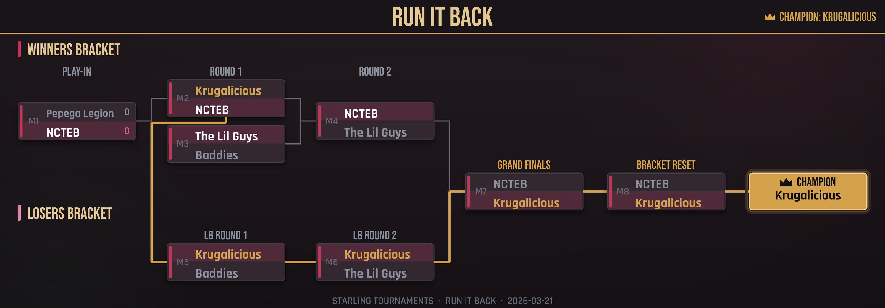

A League of Legends community on Discord
Free 5v5 tournaments, run start to finish on Discord.
Raven is the bot behind our biweekly tournament nights. It verifies your Riot account, drafts balanced teams, and keeps the bracket updated while you play. Come with a full five or come alone: getting drafted onto a team is the easiest way to find a new group to queue with.
Join the Discord Biweekly Saturdays · 3:30 PM CentralTournament night
How it runs
-
Sign up with your Riot ID
Click Register on the announcement and enter your Riot ID. That's the whole signup.
-
Get verified
Raven confirms the account through the Riot API and pulls your rank and match history. New accounts are reviewed before they're seeded.
-
Get drafted
Teams are balanced by estimated MMR so games stay close, and you're placed in the role you asked for whenever the numbers allow it.
-
Play the bracket
Matches run back to back through the evening. Moderators report results in Discord and the bracket updates as you go.
Double elimination
Everyone gets a second life
Every tournament is double elimination. Losing a match drops you into the losers bracket, where you can fight all the way back to the Grand Finals. Raven draws the bracket and posts an updated image after every game.

Fair play
Nobody plays anonymously
Every entrant links and verifies a Riot account before they can register, and unfamiliar accounts get a second look before seeding. After each event, players commend the teammates who made the night better, and that reputation follows them into the next one. Our competitions follow Riot's Community Competition Guidelines.
Between games
Something to do while your queue pops
The server doesn't go quiet between tournaments. There's a dungeon crawler to run, trading cards to collect and battle, clans to found and level, a daily Wordle, and a music bot in voice. Small games for the minutes when you're stuck in champ select or waiting on a fifth.
Before you join
Common questions
- Do I need a full team to sign up?
- No. Most entrants register solo. Raven verifies your Riot account and drafts you onto a balanced team of five, so showing up without a premade squad is normal, not a workaround.
- Is it actually free?
- Yes. Every tournament is free to enter. No downloads, no entry fee, no catch.
- What rank do I need to be?
- Any. Teams are matched by estimated MMR, not a rank cutoff, so Iron and Challenger players both get competitive, evenly matched games.
- How are teams balanced?
- Raven estimates each player's MMR from their ranked history and drafts teams so both sides come in close in total strength, then seats people in the role they asked for whenever the numbers allow it.
- What if I don't have anyone to play with?
- That's the point of showing up solo: you get drafted next to four strangers, and most people leave tournament night with a new group to queue with afterward.
Next tournament night
Ready when you are
No downloads and no setup. Join the server, link your Riot ID, and you're in the next bracket. Most people show up solo and leave with nine new people to play with.
Join the Discord Biweekly Saturdays · 3:30 PM Central